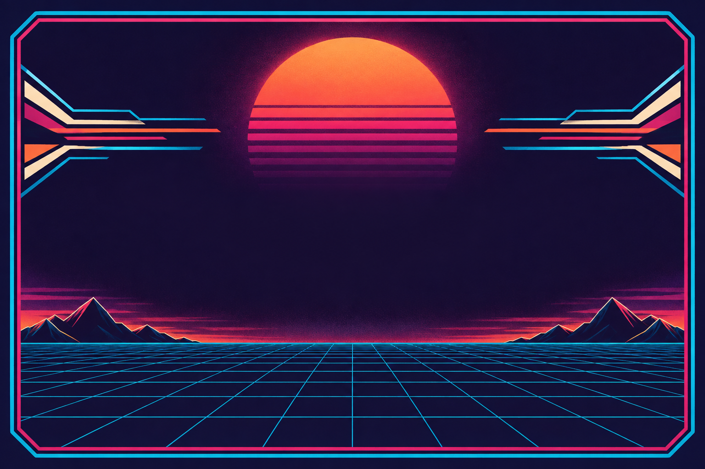

VAMP
Your Mac, within reach.
Install Vamp Sync on the Mac you want to reach. Connect with Vamp Control from another Mac, iPhone, or iPad.
Downloads
-
Vamp Sync
Install on the Mac you want to reach. Sync runs in the menu bar.
Sync setup and editions ↗Mac Intel and Apple Silicon · macOS 13+Download for Mac ↓ -
Vamp Control
Install on the Mac, iPhone, or iPad you’ll use to connect.
MacApple Silicon · macOS 13+Download ↓iPhone · iPad Download currently unavailable Unsigned IPA · re-sign to installDownload ↓
Pair your devices
Choose Local Wi-Fi or Tailscale in Vamp Sync. Open Vamp Control and use Sync’s pairing QR code or link. Compare the complete device fingerprint on both devices before approving on your Mac.
Installation help
The direct Mac downloads may need “Open Anyway” in System Settings. Control for iPhone and iPad requires re-signing before installation.